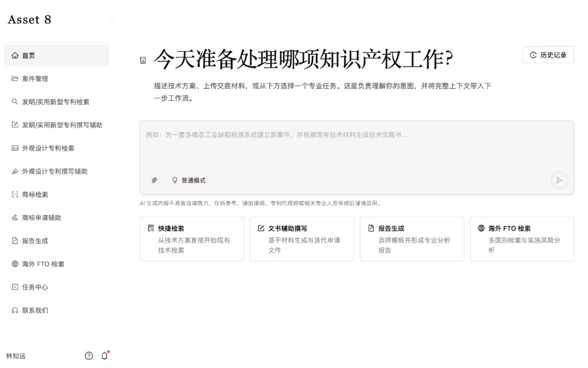

AI 产品 0–1 落地 / Agent 工作流设计
知识产权 AI 工作台 IIPMS
把专利撰写从「一次生成长文本」改成可补全、可校验、可人工确认的分阶段工作流。

背景与问题
专利代理场景里，交底书常常不完整，检索与撰写割裂，长文本生成又难以控制。一次出稿看起来快，后续修改、核验和责任回溯的成本很高。
我的职责
- 参与需求调研、业务流程梳理、功能规划、交互设计与原型验证。
- 把复杂任务拆成可校验、可回溯的分阶段工作流。
- 将专利代理业务规则抽象为可执行的 Agent 流程，并接入企业内部 API 与业务数据。
方案与实现
基于 LangGraph 设计并嵌入专利申请助手、检索与分类、专利撰写助手等模块，支持多轮信息补全、分阶段生成和人工确认，提高专业文本生成的可控性与可解释性。
结果与验证
完成从业务需求、产品设计到系统接入的闭环：代理师可以在每个阶段停下来核对，而不是面对一份无法拆开的长稿。